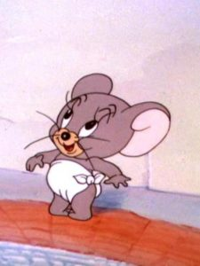
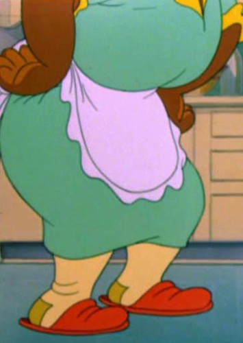
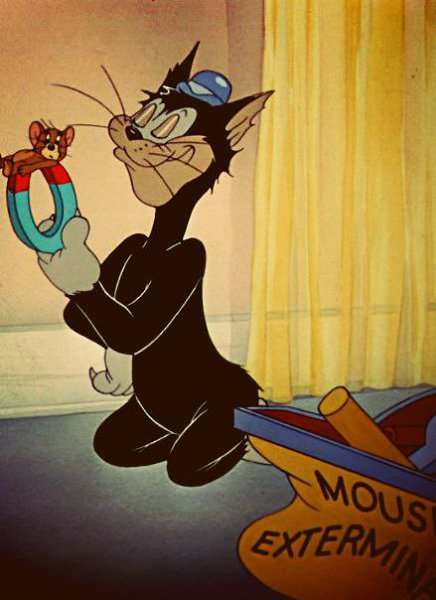
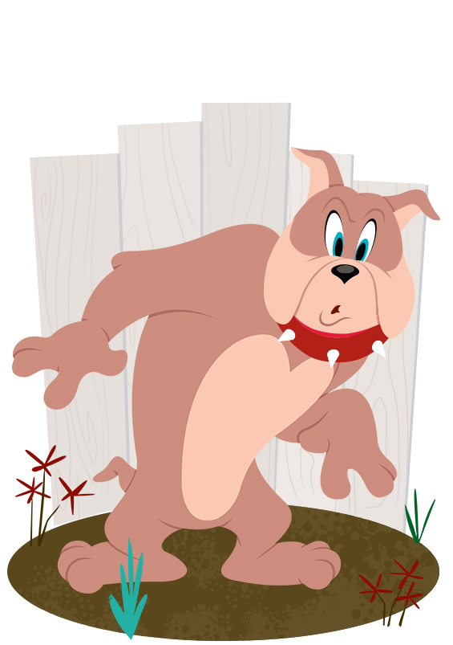
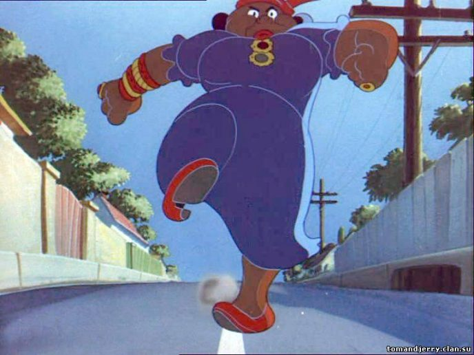
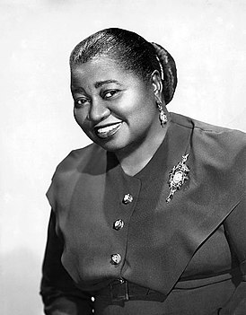

Том и Джерри - серия короткометражных мультиков,
в каждой серии которой изображено соперничество кота
по имени Том и мышонка Джерри.
Всего было выпущено окло 164 короткометражных мультфильма , 14 полнометражных мультфильмов и 5 мультсериалов. С большим успехом выходит фильм "Кот получает пинка" который вышел на экраны 20 марта 1940 года.После успеха дует Ханна-Барбера написал сценарий еще для 113 серий, которые демонстрировались в кинотеатре перед показом полнометражных фильмов.
Наиболее популярными героями являются:Мамочка-Два-Тапочка(Личность которой еще не раскрыта),Спайк(Бульдог живший с Томом и Джерри),Набблз(Серый мышонок) и Бутч(бродячий кот)

Здесь вы можете посмотреть все серии "Том и Джерри"
Для просмотра следующих серий Том и Джери необходимо зарегестрироваться тык.
Интересные факты о мультфильме Том и Джерри
-Первая серия знаменитого мультфильма была выпущена под названием “Puss Gets The Bооt”. Это единственная серия, в которой героев зовут Джаспер и Джинкс.
-Хозяйка Тома — темнокожая домохозяйка Мамочка-Два-Тапочка. За всю историю мультфильма ее лицо было показано лишь раз, в серии «Saturday Evening Puss»:
-«Том и Джерри» имеют на своем счету 7 статуэток «Оскар». Среди сериальных мультперсонажей — это рекорд, который не удалось побить даже студии «Disney».
Прототипом Мамочки-Два-Тапочка стала чернокожая актриса Хэтти Макдэниэл, обладательница статуэтки«Оскар» за роль Мамми в «Унесённых ветром»:
